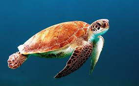

sbh HomPage
소병학
기본 정보
이름: 소병학
나이: 00년생(만23)
주소: 경기도 광주시
신분: 한국공학대학교 4학년 재학(취준생 및 예비 백수)
mbti: ?
취미: 게임,여행,피아노
좋아하는 것: 소설 읽기,게임,잡설?
배우고자 하는 것
- 풀스택 개발자로서의 역량
만들고자 하는 것
저랑 팀플하면 같이 생각해 보시죠
Acorn에서의 목표
- 성실하게 수업 참여
- 좋은 인연 만들기
- 유의미한 발전
어려워하는 것
프론트 디자인...
이름: 소병학
나이: 00년생(만23)
주소: 경기도 광주시
신분: 한국공학대학교 4학년 재학(취준생 및 예비 백수)
mbti: ?
취미: 게임,여행,피아노
좋아하는 것: 소설 읽기,게임,잡설?
저랑 팀플하면 같이 생각해 보시죠
프론트 디자인...